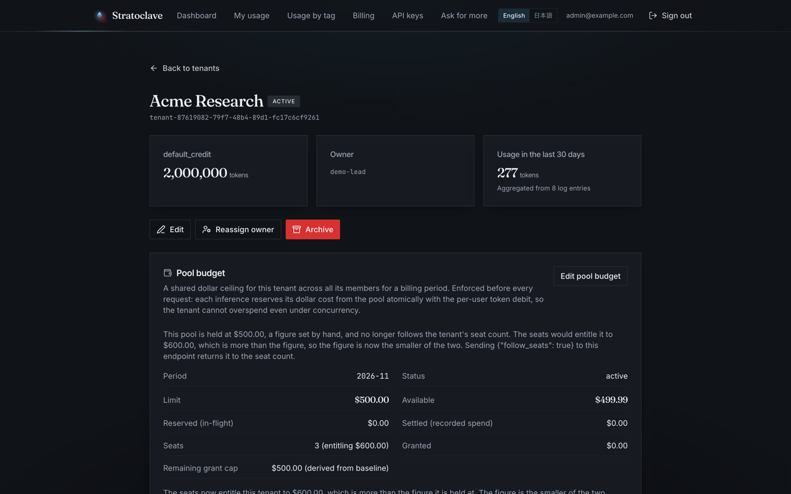
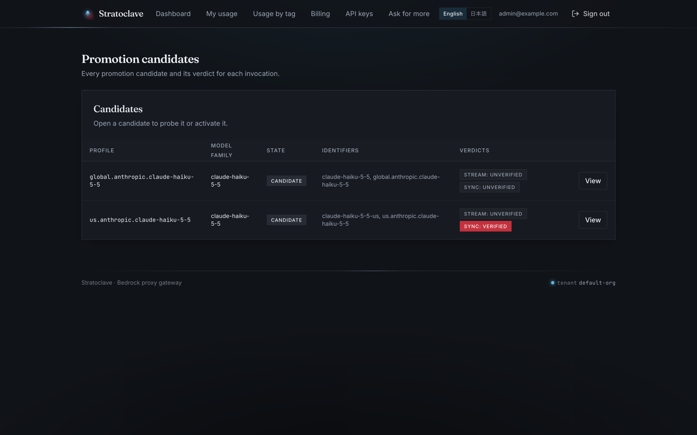

The budget gateway for Amazon Bedrock.
One URL gives every team Bedrock through Claude Code, codex or the SDKs they already use. Set a monthly dollar pool per tenant, token quotas per user and dollar quotas per model; a request that doesn't fit is refused before the model is called. See spend by team, member and task, backed by an append-only ledger you can recompute.

Hand out one URL. Your team is in.
The API and the web console share one CloudFront URL. Users paste it into the CLI, which fetches the rest of its configuration and signs them in with the AWS login they already have. Claude Code, codex and the SDKs work unchanged.
- 1
Deploy once
The administrator runs one script. It prints a CloudFront URL that serves both the gateway and the console.
- 2
Paste the URL
The installer builds the CLI and reads
/.well-known/stratoclave-configfrom that URL. Nobody copies a Cognito pool ID or client ID. - 3
Sign in, start working
Sign in with AWS SSO, saml2aws or a password, then run Claude Code or codex through the gateway with a short-lived key.
export STRATOCLAVE_URL=https://your-deployment.cloudfront.net curl -fsSL https://raw.githubusercontent.com/littlemex/stratoclave/main/scripts/install-cli.sh | bash sclv auth sso --profile your-aws-profile sclv claude -- "Summarize this repository"
The installer adds stratoclave and its short alias sclv to your PATH. Claude Code and codex are installed separately.
Other tools and the three endpoints
sclv codex -- "Summarize this repository"
Mints a key that can only call the Responses API; your ~/.codex/config.toml is untouched.
export ANTHROPIC_BASE_URL=https://your-deployment.cloudfront.net export ANTHROPIC_API_KEY=$STRATOCLAVE_API_KEY
The application code does not change. Issue the key from the CLI or the web console.
export OPENAI_BASE_URL=https://your-deployment.cloudfront.net/openai/v1 export OPENAI_API_KEY=$STRATOCLAVE_API_KEY
For Chat Completions, point the SDK at https://your-deployment.cloudfront.net/v1 instead.
POST /v1/messagesAnthropic Messages: streaming, tool use, vision, prompt caching. Anthropic SDK, Claude Code, Claude Desktop Cowork.POST /v1/chat/completionsOpenAI Chat Completions: streaming and tool calling. Unsupported parameters fail with 400 instead of being dropped.POST /openai/v1/responsesOpenAI Responses, for the codex CLI, served by the OpenAI-compatible models on Bedrock.
Sign in with the AWS login you already have
The CLI signs sts:GetCallerIdentity on your machine and sends the signed request. The gateway forwards it to AWS STS unchanged and trusts only the Arn, UserId and Account that STS returns. Your AWS credentials never leave your laptop, and the gateway never holds an identity-provider refresh token, so a compromised gateway cannot reach your IAM Identity Center or SAML IdP.
Which logins work, and what is refused
Works with aws sso login, saml2aws, and Entra ID, Okta or ADFS through SAML. Each signed request is accepted once, and it names this gateway's host, so a request signed for another server is refused. Trusted accounts and allowed role patterns are set per AWS account; long-lived IAM users and EC2 instance profiles are refused by default. This is the same pattern as HashiCorp Vault's AWS auth method.
Multi-tenant from day one: tenants, roles and budgets built in.
Each tenant gets a dollar pool for the month. Each member gets a token quota, and each model can get its own dollar quota. Team leads manage only their own tenant and never see another's data. The same roles decide what the API, the CLI and the console let you do.
Example values. One request reserves from all three levels in the same transaction, or from none.
| Role | What they can do |
|---|---|
| admin | Every tenant: create tenants and users, set pools, quotas and model access, approve new models, see all usage. |
| team_lead | Only the tenants they own: invite and remove members, adjust members' quotas, see the tenant's usage. |
| user | Themselves: call models, issue and revoke their own API keys, see their own usage, ask for more. |
Temporary raises that expire on their own
- A member who hits a limit requests more in the console.
- An administrator approves an amount and an end date.
- The grant raises the ceiling, then expires. Nobody has to remember to lower it.
How sign-in and roles fit together
Cognito passwords, Vouch-by-STS and sk-stratoclave-* API keys all resolve to the same user record, so the way someone signs in never decides their role, and no role reaches beyond its tenant. API keys carry scopes of their own (for example a key that may only call the Responses API) and a per-user cap on how many are active. Every privileged change is written as an audit event.
The admin console ships with it.
Admins set pools and quotas, approve new models and see where the money went. Every user sees their own usage and keys. The console ships with the stack, in English and Japanese. These are real screens, with fictional data.
A model lands on Bedrock. Promote it in the console, and every team can use it.
The gateway reads your account's Bedrock model list and AWS's own price APIs, and new models show up in the console as candidates. An administrator checks one with a real call and promotes it. It joins the catalogue on every gateway replica within about a minute, with no code change and no redeploy, and the budgets, quotas and tags you already have apply to it from the first request.
- DiscoveredFound in your account's Bedrock models, with its price read from AWS.
- CandidateAn administrator picks it in the console and gives it an alias.
- Probed with a real callOne call per mode, sync and stream, and the charge is checked in the ledger.syncstream
- LiveGranted to tenants and listed in the gateway's model list. Clients call it by name through the same three APIs.

What still needs a release
The catalogue is data, so adding a model needs no release. Prices are different: a charge needs a reviewed price row, and those ship with the release, so that a model is never billed at a price nobody checked. A model whose price matches an existing row goes live from the console alone; a model with a new price needs its row added first. Activation is a compare-and-set on the probe result, so a model that changed after it was probed is not activated on stale evidence.
Check-then-call can't hold a budget under concurrency.
When an application reads the balance and then calls the model, every call that arrives at the same moment sees the same balance, and all of them go through. Move the sliders and run both designs on the same traffic.
Check, then call
Each call reads the balance, then spends. Calls in flight all saw the same number.
Reserve in one transaction
Each call reserves its cost with a conditional write. The write that would cross the limit fails.
Dollars, not tokens
The same 100,000 tokens cost anywhere from $0.0080 to $7.50, depending on the model and the kind of token. Budgets are kept in micro-dollars, so a limit means money.
Why a token cap is not a budget
A price depends on four things at once: the model, the kind of token (input, output, cache read, cache write), the long-context band, and whether the call is regional or global. Fix the token count and the cost still varies by a factor of about 938.
An append-only ledger
Every movement of money is one event in an append-only table. The gateway cannot edit or delete a settled charge: its code has no such call and its IAM role has no such permission.
What the ledger holds
Five event types: RESERVE, SETTLE, RELEASE, RECLAIM and LATE_SETTLE. Each is written under a condition on its own key, so a retry cannot record it twice. The task role's policy has no update, delete or batch-write on this table, and the code contains no such call.
The usage log is a separate, reporting copy: one row per request with the model asked for, the model billed, tokens by kind and the cost. It stores no prompts and no responses, and e-mail addresses only as a one-way hash.
Crashed reservations are reclaimed, once
Each reservation writes a hold row in the same transaction. If the process dies before settling, a later request finds the expired hold and returns the money exactly once. If the model call had already gone out, the hold stays, because Bedrock may have billed it.
How the reclaim works, and its limit
There is no extra process or timer. Pooled requests run a small, bounded sweep of expired holds; the decrement and the delete are one conditional transaction, so two sweepers cannot credit the same hold twice.
One gap no timing can close from this side: if Bedrock bills a call and the process dies before recording it, that spend is not in the ledger. When the provider call had already left, the hold is kept rather than returned, so the budget is not handed back for a charge that may have landed.
Follow one request: reserve, call, settle once
Money is held before the model sees the request, and settled against what the model actually reported. A request that does not fit is refused at the door, so the model is never called for it.
Press play to send one request through.
A staged breaker, not an on/off switch
Near the limit the gateway changes behaviour before it refuses: with about 25% left it moves requests to a cheaper model tier, and at about 5% the breaker itself refuses with 402. The breaker is advisory; the hard stop is still the reservation, which refuses anything that does not fit at any level.
Failover and model cascade
On streaming calls, a 429 or an empty stream retries the same model in another region (for example us-east-1 to us-west-2). Separately, when one model's quota is used up, the request moves down the tenant's chain, such as Opus to Sonnet to Haiku, and each candidate is reserved and settled at its own price. The non-streaming Anthropic path is single-region.
Prices read from AWS, and never lowered by a failure
A rate resolves from an admin override, then a live read of AWS's own price APIs, then a stored snapshot, then a reviewed floor bundled with the release. A failed or implausible fetch falls through to the next rung instead of charging less. Price feeds are opt-in, and a floor-only deployment is valid. The rate is pinned at reserve time, so a price change mid-request does not move the charge.
A new Bedrock model, usually without a release
Discovery finds the new model and its price, an operator makes it a candidate, a real probe call confirms the charge actually appears, and then it is activated and granted to tenants. The catalogue is data. A model with a new price still needs its reviewed price row, which ships in a release.
The budget rules are proven on a formal model, and the code is tested against it.
The reserve and settle rules are written down as a model and checked with the Z3 solver, so a property holds for every input inside its stated bounds rather than for the cases someone thought to test. Each proof is held to three standards.
Proven on the formal model
- Reserve and settle cannot count the same money twice.
- If the amount reserved up front is a sound upper bound, the conditional write is a hard ceiling. For tenants with a dollar pool, reserving that bound is on by default.
- Pinning the rate at reserve time is enough to keep the ceiling when prices change mid-request.
- Rounding is always up, so a charge is never below its exact cost; no overflow within realistic bounds; a refund cannot push a balance negative.
Outside the proof
- The implementation and DynamoDB's own behaviour. The differential tests sample the code; they do not prove it.
- A charge that lands at Bedrock while the process dies before recording it.
- Tokens that can't be bounded from request size: image tokens, which scale with pixels, and server-side tool results.
How each property is held to three standards
A proof
Z3 shows the property holds for every value inside the stated bounds, not only for sampled cases.
A counterexample
Delete the guard and the solver finds the input that breaks the property, so the proof is known to depend on that guard.
A differential test
The real Python and an independent reference run on the same inputs, which checks the shipped code against the model on sampled inputs.
Run the proofs yourself: make prove
$ make prove
130 passed in 8.80s
Proved: reserve/settle admits no double-counting, the PENDING-protocol
migration is a verified-equivalent money path, and the ceiling is sound
GIVEN that the reserve estimate dominates the settled actual per
component, under the axioms stated at the top of each test file above.
Ten Z3 proof files, about ten seconds on a laptop, no network and no AWS account.
The defect the proofs found first
Writing the model exposed a mismatch before it reached production: settle charged four token kinds while the estimate priced three, with no cache-write leg. On the shipped rates, a request with 1,000 input, 100 output and 5,000 cache-write tokens reserved 7,500 micro-dollars and settled at 38,750. Both sides now read one list of billable legs.
Checked on a deployed stack, too
On a dedicated deployment with real Bedrock traffic, 8 concurrent probes raced an occupier holding a reservation open, four times over: 11 admitted and 16 refused for pool headroom, 24 of those attempts while another reservation was open. No state rebuilt from the ledger ever showed settled plus reserved above the limit, and all 11 bound-priced reservations covered their settle. The sample is small, and the evidence page says so.
Where each claim stands
Every claim in the project is filed under one evidence tier: formal proof, deployed-live, gateway-live, in-process, or unverified. Read it in docs/EVIDENCE.md.
Bedrock models, and your own GPU or local LLM, in one ledger.
Wherever the tokens are generated, the request takes the same reserve, rate and settle path and lands in the same ledger, under the same budget.
HYBRID_SERVING_ENABLED, and it only calls endpoints the operator lists in STRATOCLAVE_VLLM_ENDPOINTS. Your own hardware has no list price, so calls are rated at the cost-recovery rate the operator sets. Today it serves streaming /v1/messages calls (checked end to end with Ollama on a laptop); non-streaming calls and /v1/chat/completions still go to Bedrock only.Keep every model call inside Japan, or inside the US.
Set one list of regions. Only models whose every destination lies inside it are offered, the model names your tools already use keep working, and a new model that stays inside is added from the console, with no code change.
Name the regions
STRATOCLAVE_INFERENCE_REGIONS=ap-northeast-1,ap-northeast-3 BEDROCK_PRIMARY_REGION=ap-northeast-1 DEFAULT_BEDROCK_MODEL=jp.anthropic.claude-opus-4-7
Tokyo and Osaka for Japan. The same setting with US regions closes a deployment to the US.
The same names, served inside
| name | runs in |
|---|---|
| claude-opus-4-7 | Tokyo, Osaka (jp. profile) |
| claude-sonnet-4-6 | Tokyo, Osaka (jp. profile) |
| claude-opus-5-5 | Tokyo, Osaka (via the console) |
| claude-opus-5 | not offered: US only |
| global.* | not offered: any region |
Claude Code and the SDKs keep sending the same model names. A model that can run outside the list is refused before any budget is reserved.
New models from the console
Discovery reads, from Bedrock itself, the regions each inference profile can run in. Promote and activate a model that stays inside, such as Opus 5.5 through its Japan profile; one that can run elsewhere is refused at each step, before the verification call.
Call the gateway over PrivateLink, with no path to it from the internet.
Set STRATOCLAVE_ENTRY=private and the API is published as a VPC endpoint service instead of through CloudFront. A code-server on EC2, a CI runner or an internal app connects through an interface endpoint in its own VPC and a private DNS name. The API only: the console is not served on this path, so put your own UI in front if you need one.
Deploy the private entry
STRATOCLAVE_ENTRY=private STRATOCLAVE_PRIVATE_DOMAIN=stratoclave.internal.example.com STRATOCLAVE_PRIVATE_CERTIFICATE_ARN=arn:aws:acm:... STRATOCLAVE_PRIVATE_ALLOWED_PRINCIPALS=arn:aws:iam::123456789012:root
An internal load balancer on 443 behind a Network Load Balancer, published as an endpoint service. Only the listed AWS accounts can ask to connect.
Connect from your VPC
Create an interface endpoint to the service, the administrator accepts it, and a private hosted zone points the name at the endpoint. The name does not resolve before the connection is accepted.
The same CLI, the same keys
stratoclave setup https://stratoclave.internal.example.com
Sign-in, API keys, budgets and the ledger work as on the CloudFront entry.
Bedrock does not document which failed calls it bills. We measured it.
A budget has to know what a timeout, a rejection or a retry costs. AWS's documentation does not say, and most client code assumes a failed call is free and gives the money back. We tested that assumption against Bedrock's own CloudWatch token counters (us-east-1, 2026-08-29), and it leaks money in three ways.
- The usual assumption
- The client timed out, so nothing was billed.
- What we measured
- A Converse call abandoned at a 2 s client read timeout. The model kept generating and Bedrock recorded 1,493 output tokens.
- What Stratoclave does
- Once a call has left for the model, its reservation is kept, not refunded, so the budget does not hand back money that was spent.
max_attempts: 1- The usual assumption
max_attempts: 1means one call.- What we measured
- botocore turns it into two attempts. If the second succeeds, the first is still billed, and your code only ever sees a success.
- What Stratoclave does
- The SDK is pinned to exactly one attempt. Retries and region failover happen in the gateway's own router, where each attempt is reserved and settled.
- The usual assumption
- The CloudWatch
Invocationsmetric tracks what you pay for. - What we measured
- It also counts rejected requests that produced no tokens. A burst of rejections looks like spend.
- What Stratoclave does
- Every charge is settled from the token usage the model reported, at the price pinned when it was reserved.
All five findings, the conditions, and a harness to reproduce them: docs/MEASUREMENTS.md
Each finding is an existence proof from a small number of trials, not a rate. The document says where each one's evidence stops.
Run it on one machine, or as a full stack on AWS.
On one machine
DynamoDB Local and the gateway on 127.0.0.1, calling your real Bedrock. No always-on AWS infrastructure; Bedrock usage is billed as usual.
git clone https://github.com/littlemex/stratoclave.git cd stratoclave make up make prove make down
Full stack on AWS
One script builds the VPC, DynamoDB, ALB, WAF, CloudFront with S3, Cognito and Fargate with AWS CDK v2. cdk-nag checks every synth.
cd stratoclave/iac npm install ./scripts/deploy-all.sh
On one machine
Full stack on AWS
Known limits
- Fewer providers than general proxies such as LiteLLM. Stratoclave only adds a provider whose calls and prices it can verify first-hand.
- Choosing the model is left to an external router. The integration with vLLM Semantic Router is built but not wired yet.
- The usage log keeps 90 days. The ledger is the system of record for charges; an archival export is a tracked gap.
- Live measurements use small samples, and no latency SLO is claimed.